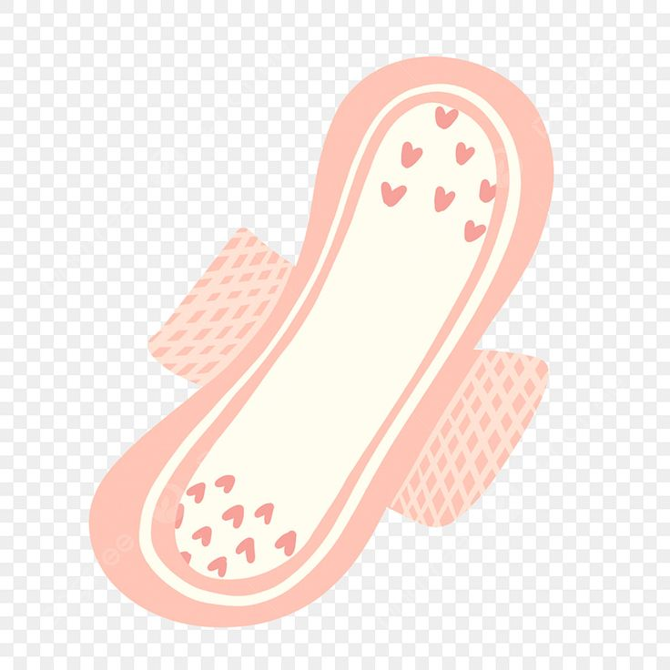
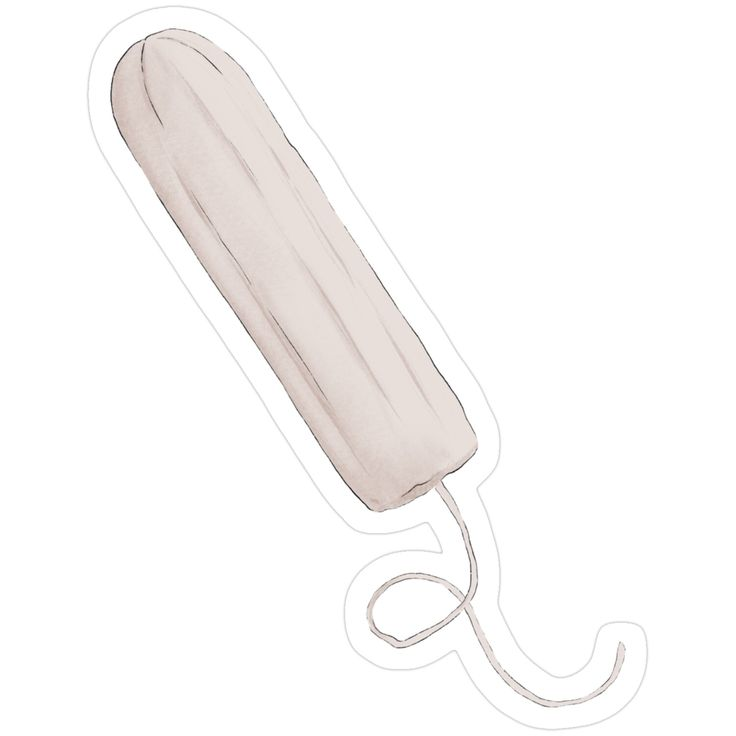
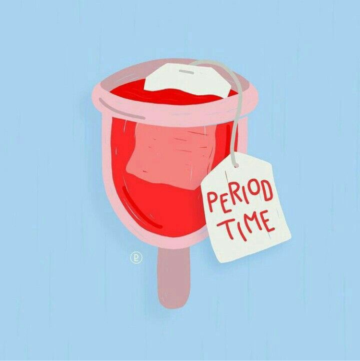
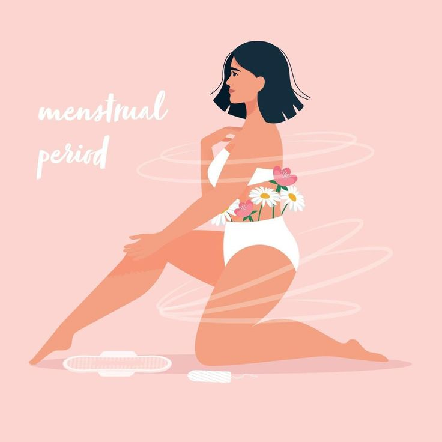

Know What You Wear
SheSure is a menstrual product safety awareness platform designed to help users understand the materials used in sanitary products like pads, tampons, menstrual cups, and period panties. Many people are unaware of the ingredients that come in direct contact with their skin. This website provides simple information about different menstrual products and helps you make safe and informed choices. It promotes hygiene, awareness, and better health without supporting any specific brand.
This website provides simple information about different menstrual products and helps you make safe and informed choices. It promotes hygiene, awareness, and better health without supporting any specific brand.
Pads: Commonly used, easy to handle, available in different sizes.
Tampons: Inserted inside the body, provide freedom of movement.
Menstrual Cups: Reusable, eco-friendly, and long-lasting option.
Period Panties: Comfortable, reusable, and absorbent innerwear.
Menstruation is controlled by hormones from the brain and ovaries. In a typical monthly cycle of about 28 days (though it can vary), the process starts with the period (around day 1–5), when the old uterine lining is shed. After that, a hormone called FSH helps an egg develop in the ovary, and estrogen makes the uterus lining thick again (day 6–13). In the middle of the cycle (around day 14), another hormone, LH, causes the ovary to release the egg—this is called ovulation. After ovulation (day 15–28), progesterone prepares the uterus for possible pregnancy. If pregnancy does not happen, estrogen and progesterone levels drop, causing the lining to break down and come out as the next period, and the cycle repeats. Cramps occur because the uterus muscles contract to push out the lining, and mood changes or tiredness happen due to hormone changes. From a male point of view, understanding this shows that periods are not just simple bleeding but a full monthly biological cycle, and the pain and emotional changes are real, so it is important to be respectful, supportive, and not make fun of it.
If a male is viewing this page, here’s how you can support your partner during periods:
Remember: Small care and respect make a big difference.




1. Cotton & Breathable Material: Choose pads that have a soft cotton top layer and allow air flow. This helps in preventing sweating and keeps your skin comfortable.
2. Fragrance-Free: Avoid pads with artificial fragrance, as they may cause irritation or allergic reactions.
3. Chlorine-Free Processing: Pads processed without chlorine are safer and reduce exposure to harmful chemicals.
4. Skin-Friendly Core: The inner material should be gentle and non-irritating, especially for sensitive skin.
5. Good Absorption & Leak Protection: Pads should absorb quickly and have side barriers to prevent leakage during heavy flow.
1. 100% Cotton Material: Choose tampons made of pure cotton to reduce irritation and chemical exposure.
2. Fragrance-Free: Avoid scented tampons as they may cause infections or irritation.
3. Proper Absorbency Level: Select light, regular, or super absorbency based on your flow.
4. Smooth Applicator: A smooth applicator makes insertion easier and more comfortable.
5. Safe Usage Time: Tampons should be changed every 4–8 hours to avoid health risks.
1. Medical-Grade Silicone: Choose cups made from safe, medical-grade silicone.
2. Correct Size: Select size based on age, flow, and comfort.
3. Flexible & Comfortable: Cup should be soft enough to insert easily.
4. Easy to Clean: It should be easy to wash and sterilize.
5. Long Wear Time: Cups can be worn for up to 8–12 hours safely.
1. Absorbent Layers: Panties should have multiple layers to absorb flow properly.
2. Breathable Fabric: Choose materials that allow airflow and prevent sweating.
3. Leak-Proof Design: Good quality panties prevent leaks during movement.
4. Washable & Reusable: They should be easy to wash and durable.
5. Comfortable Fit: Proper fit ensures comfort and prevents leakage.
1. How often should I change a pad?
Every 4–6 hours to maintain hygiene and avoid infections.
2. Can I sleep with a tampon?
Avoid using it for long hours. Use a pad at night for safety.
3. Are scented products safe?
It is better to avoid them as they may cause irritation.
4. Can I use a menstrual cup for long hours?
Yes, but empty it within 8–12 hours.
5. Are menstrual cups safe?
Yes, if cleaned and used properly.
6. Can I reuse period panties?
Yes, wash them properly after each use.
7. What is the best product for beginners?
Pads are usually easiest for beginners.
8. Is it normal to have cramps during periods?
Yes, mild cramps are normal.
9. Can I exercise during periods?
Yes, light exercise is safe and can reduce discomfort.
10. How do I dispose of pads or tampons?
Wrap them in paper and throw in a dustbin. Do not flush.
11. Can I bathe during periods?
Yes, daily bathing helps maintain hygiene.
12. What if I have very heavy flow?
Use high-absorbency products or a menstrual cup.
SheSure is a platform that helps users understand menstrual products and make safe choices. It provides simple information, safety checks, and hygiene tips to promote awareness and better health.